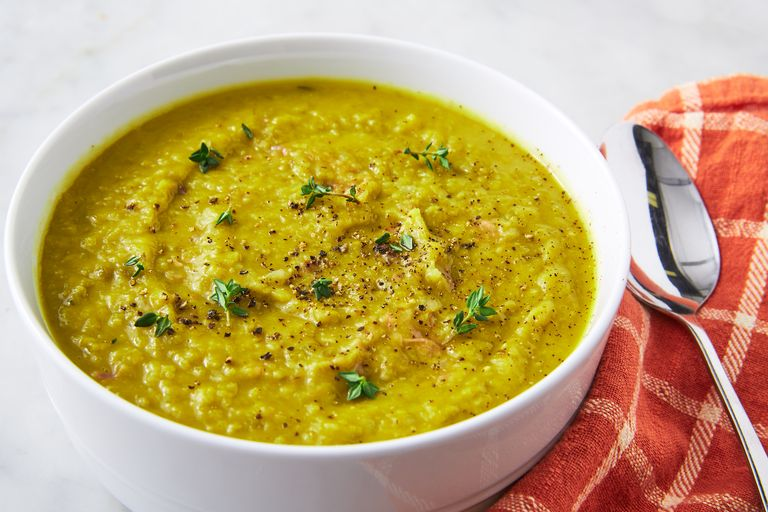

Split Pea Soup.

Ingredinets: 4 Servings
- 2 tbsp. extra virgin olive oil, divided
- 1 (1 lb.) smoked ham hock
- 1 medium yellow onion, chopped
- 2 medium leeks (white and pale green parts only), thinly sliced
- 2 large shallots, minced
- Kosher salt
Directions
- In a large pot over medium heat, heat 1 tablespoon oil. Add ham hock and cook, turning occasionally, until golden on all sides, about 6 minutes total. Remove ham hock from pot and add remaining oil.
- Add onions, leeks, and shallots and season with salt and pepper. Cook until tender, 6 minutes more. Add split peas, broth, thyme, bay leaves, and seared ham hock and bring to a boil. Reduce to a simmer and cook, covered, stirring occasionally until peas are tender, about 1 hour. (If the soup gets too thick, add water 1/2 cup at a time until desired thickness is reached.)
- When peas are tender, remove bay leaf, thyme, and ham hock. Remove any meat from ham hock and shred. Use an immersion blender or countertop blender to purée roughly 1/4 of the soup. Return puréed soup to pot along with shredded ham hock and season to taste with salt and pepper.
- Served topped with more fresh thyme and another crack of black pepper.